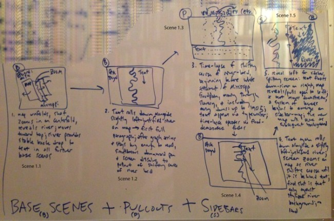

The Scholar as Toolmaker
ACLA New York, March 23, 2014
programme
Benjamedia
The Right Tendency
Coding the Humanities
Benjamedia
Snow Fall
Benjamedia
Storyboard
Benjamedia

Huge Mess
Benjamedia
The Right Tendency
Technique
The Right Tendency
Instead of asking: what is the position of a work vis-Ã -vis the social production relations of its time, does it underwrite these relations, is it reactionary, or does it aspire to overthrow them, is it revolutionary? ... I should like to ask: what is its position within them? This question concerns the function of a work within the literary production relations of its time. In other words, it is directly concerned with literary technique
(Benjamin 87)
Collaboration
The Right Tendency
The crucial point, therefore is that a writer's production must have the character of a model: it must be able to instruct other writers in their production and secondly, it must be able to place an improved apparatus at their disposal. This apparatus will be better the more consumers it brings in contact with the production process - in short, the more readers or spectators it turns into collaborators."
(Benjamin 98)
Coding the Humanities
Toolmakers
Coding the Humanities

Teaching
Coding the Humanities
Languages
Coding the Humanities
| Imperative | Declarative |
|---|---|
| 10 Print "Yeehaa" | <h1>This is a Header...</h1> |
| 20 Goto 10 | <p>... and a Paragraph</p> |
Imperative
Coding the Humanities
$(document).ready(function(){
var words, text, wordsString;
text = $('article').innerText();
words = filterWords(text, blacklist);
wordsString = words.join(", ");
$('body').append(wordsString);
});
Declarative
Coding the Humanities
<filterWords blacklist="{{blacklist}}"></filterWords>
Resources
| Walter Benjamin | The Author as Producer |
| NY Times | Snow Fall |
| Github | |
| Web Components | HTML5 Rocks |
| Polymer Project | |
| Coding the Humanities | Project Site |
| Course Site | |
| Benjamedia (soon...) |